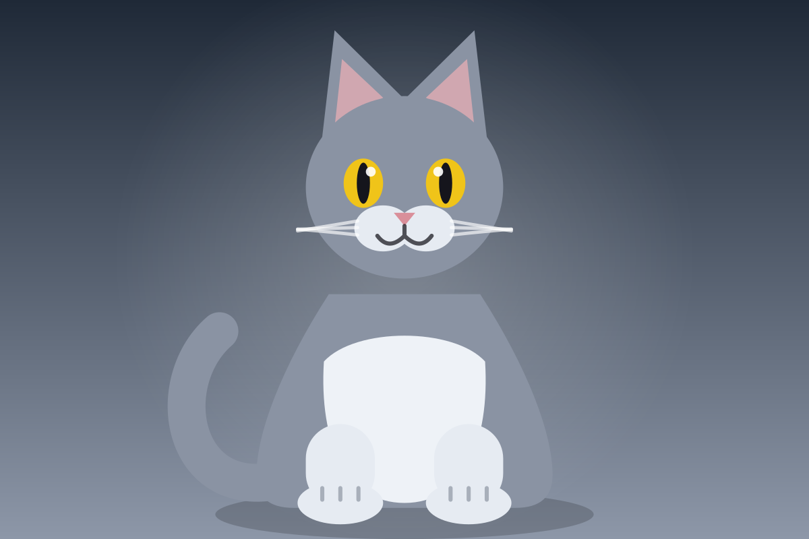
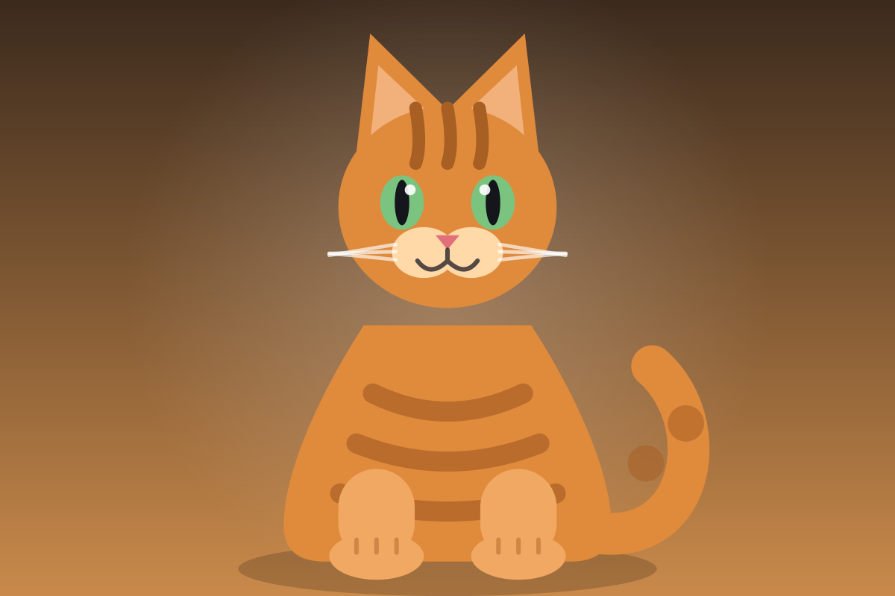
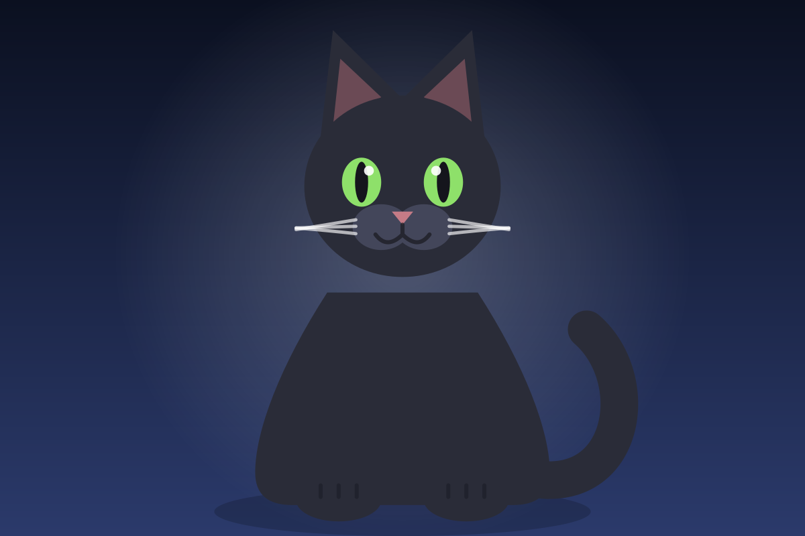
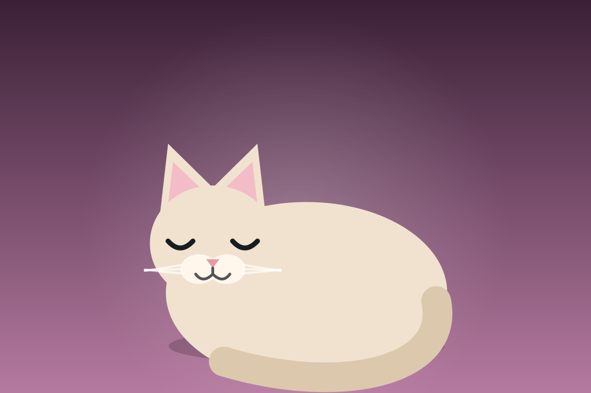

Galerie
Six chats, affichés en une colonne sur téléphone et en grille sur grand écran.
Ce site est un banc d'essai : construire, modifier et publier un vrai site web sans jamais ouvrir un ordinateur. Navigation, images, mise en page — tout doit tenir dans la main.


Six chats, affichés en une colonne sur téléphone et en grille sur grand écran.

Les étapes du chantier, dans l'ordre, avec ce qui marche et ce qui coince.

Pas d'outil de build. Du HTML, une feuille de style, quelques lignes de JavaScript. Un fichier modifié est un site modifié.
Pas de dépendance externe. Les images sont des SVG dans le dépôt : rien à charger ailleurs, et ça reste net sur les écrans haute densité.
Tout se lit à une main, en mode portrait.